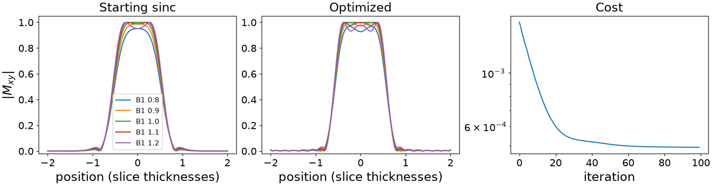

Note
Go to the end to download the full example code or to run this example in your browser via Binder.
Designing an RF pulse by optimal control#
The scope of this notebook is to design the samples of an RF pulse directly, by gradient descent through a Bloch simulation of what they do [1].
A slice-selective pulse is designed for one transmit field. Where B1 varies – by a fifth either way across a body at 3 T – the flip inside the slice varies with it. Here a 90 degree excitation is reshaped so that it stays as close to 90 degrees across that range as its samples allow.
import math
import torch
from torchsim import SequenceDesign, compose_spinor
Pulse and slice#
The pulse is SAMPLES samples long, and under its slice-select gradient
each sample turns a spin at x slice thicknesses from the centre by
2 pi TBW x / SAMPLES about z. Its drive is in radians per sample, so
the design is stated without a raster or a gradient amplitude: any pulse of
this time-bandwidth product plays it.
The starting point is a Hamming-windowed sinc with the area of a 90 degree flip – a small-tip design, played at a large tip.
SAMPLES, TBW = 128, 4.0
x = torch.linspace(-2.0, 2.0, 161, dtype=torch.float64)
turn = 2 * math.pi * TBW / SAMPLES * x
t = torch.arange(SAMPLES, dtype=torch.float64) - (SAMPLES - 1) / 2
sinc = torch.sinc(TBW * t / SAMPLES) * (
0.54 + 0.46 * torch.cos(2 * math.pi * t / SAMPLES)
)
start = sinc / sinc.sum() * (math.pi / 2)
Transmit field#
Every spin is simulated at five transmit scalings, from 0.8 to 1.2 of nominal. The pulse is one; what it does at each scaling is not.
B1 = torch.tensor([0.8, 0.9, 1.0, 1.1, 1.2], dtype=torch.float64)
def excited(real, imag):
"""``|Mxy|`` after the pulse, from ``+z``: ``(B1, x)``."""
drive = (real + 1j * imag)[:, None, None] * B1[None, :, None]
a, b = compose_spinor(drive, turn.expand(len(B1), -1))
return (2 * a.conj() * b).abs()
The cost#
Inside the slice the magnetisation should be all transverse, outside it untouched; the transition band between is left free. A small penalty on the pulse’s energy keeps it from buying flatness with power.
inside = (x.abs() < 0.4).double()
outside = (x.abs() > 0.75).double()
def cost(real, imag):
transverse = excited(real, imag)
miss = inside * (transverse - 1.0) ** 2 + outside * transverse**2
energy = (real**2 + imag**2).sum() / (start**2).sum()
return miss.sum() / (inside.sum() + outside.sum()) / len(B1) + 1e-4 * energy
Optimized pulse#
The real and imaginary parts of every sample are the designed parameters,
free of limits: the scanner’s peak B1 would be a Bounded
on them.
design = SequenceDesign(
cost, real=start.clone(), imag=torch.zeros(SAMPLES, dtype=torch.float64)
)
result = design.minimize(iterations=100, learning_rate=2e-4)
real, imag = result.parameters["real"], result.parameters["imag"]
with torch.no_grad():
before = excited(start, torch.zeros_like(start))
after = excited(real, imag)

Inside the slice the flip now varies less across the transmit range, most of all where B1 is low, while outside it the leakage stays at the sinc’s level:
starting sinc: |Mxy| in the slice at each B1 [0.895, 0.94, 0.967, 0.976, 0.969]
optimized: |Mxy| in the slice at each B1 [0.945, 0.981, 0.996, 0.989, 0.963]
Total running time of the script: (0 minutes 8.139 seconds)